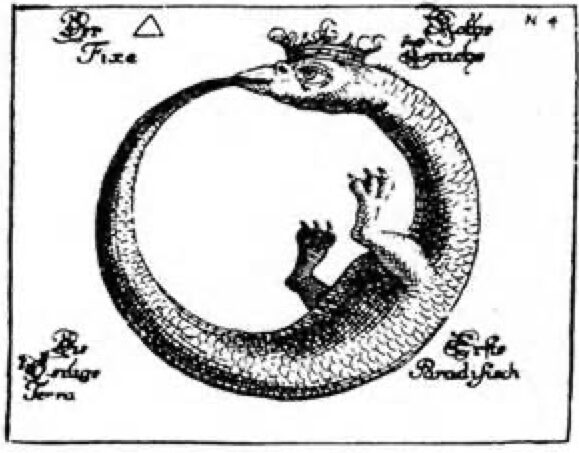
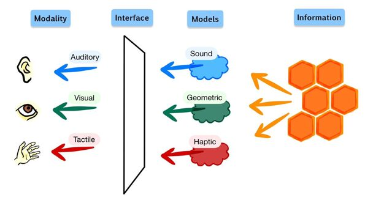
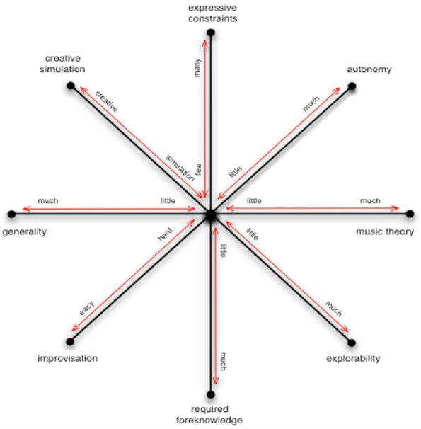
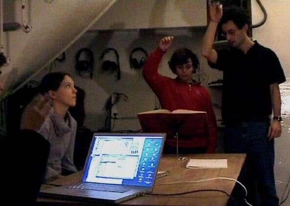
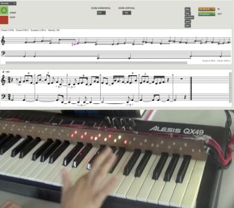
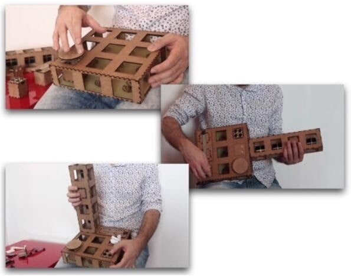
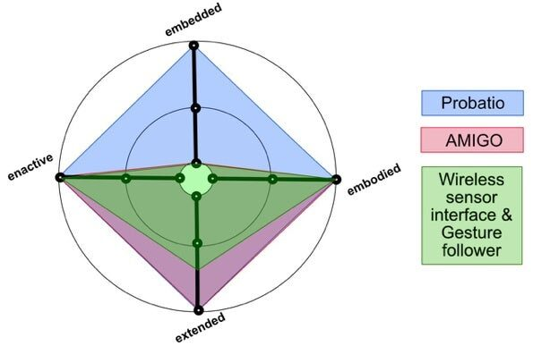

Improvised Sound-Making within Musical Apprenticeship and Enactivism: An Intersection between the 4E\`s Model and DMIs
Improvised Sound-Making within Musical Apprenticeship and Enactivism: An Intersection between the 4E`s Model and DMIs
Isabela Corintha
University of Aveiro
isabelaalmeida29@ua.pt
Giordano Cabral
Centro de Informática
UFPE
grec@cin.ufpe.br
ABSTRACT
Recent years have witnessed the appearance of many new digital musical instruments (DMIs) and other interfaces for musical expression (NIME). This paper highlights a well-established music educational background theory that we believe may help DMI developers and users better understand DMIs in the context of music cognition and education.
From an epistemological perspective, we present the paradigm of enactive music cognition related to improvisation in the context of the skills and needs of 21st century music learners.
We hope this can lead to a deeper insertion of DMIs into music education, as well as to new DMIs to be ideated, prototyped and developed within these concepts and theories in mind.
We specifically address the theory generally known as the 4E`s model of cognition ( embodied, embedded, extended and enactive,) within DMIs. The concept of autopoiesis is also described. Finally, we present some concrete cases of DMIs and NIMEs, and we describe how the experience of musical improvisation with them may be seen through the prism of such theories.
Author Keywords
Autopoiesis, 4E`s model of cognition, DMIs, improvisation, music education
CCS Concepts
• Applied computing → Arts and humanities → Education → Interactive learning environments
1. INTRODUCTION
Human culture traditionally interacts in activities recognized as musical vitalizing traditional practices keeping the music and culture alive [40]. Improvised sound-making occurs within melodic, rhythmic, sonic, harmonic, and social frameworks across many communities [40, 41] and can be situated as a core objective in music learning. Improvisation in music education challenges students through effective listening, develops a strong sense of creative potential, prepares them for complex decision making during performance [19], and impels the ability to interact with other musical genres and cultures [7]. In an attempt to contribute to a better understanding of the meaning of improvisation for music education within Digital Musical Instruments (DMIs), this work considers possibilities of contemplative-enactive music cognition. We discuss the field of embodied cognition (Varela et al., 1993) and the autopoiesis concept (Maturana & Varela, 1980) in its ability to express the relevance of participatory, relational, emergent, and embodied musical activities and developments, responding to a broader demand for the 21st-century musical apprenticeship [28, 42].
Through innovative learning technologies focusing on improvisation, music students may explore their embeddedness in a given milieu while simultaneously bringing contributions to the living enactment and transformation of the socio-cultural environment [14, 25, 40]. Although in recent decades there has been a growing recognition of the importance of improvisation in music education, the question of how it should be introduced and developed is still a challenge for music educators and DMI designers [19, 40]. In what follows, we consider how the recent “4E`s” model associated with cognition (which sees living cognition as essentially embodied, embedded, extended and enactive) [32] may offer a useful framework for the learning music process using DMIs. The autopoiesis concept which recognizes the adaptive capacity of living systems towards their environment as an intelligent cognitive process [26] is also described.
It is important to note that this work is not evaluating DMIs, rather it presents observations and understandings concerning improvisation practice in the theory of embodied music cognition considering enhancing music education.
We conclude by presenting works related to the enactive approach for improvisational practice within DMIs.
2. IMPROVISATION IN MUSICAL APPRENTICESHIP
One of the three branches in Émile Jaques-Dalcroze`s pedagogy is improvisation (1865- 1950). Dalcroze was concerned with unifying the mind and body in musical feeling and physical sensation, to achieve musical fluency; flexibility; and, above all, a personal creative voice [17, 19, 43].
Although the pedagogical treatments of improvisation by Dalcroze have had a profound influence on modern music education, improvisation remains identified as a complex human activity [15, 19, 24]. The specific argument that improvisation is essential within music teaching and learning is held by a growing number of music pedagogues [7, 17, 18, 34, 36] and deeply integrates the fundamentals of music into a more comprehensive musicianship [13, 19]. Furthermore, due to the intrinsic nature of improvisation, it is considered as a highly inclusive, cross-cultural practice in which people participate in a more embodied form of music-making than that entailed in repertoire performance.
Recent years have seen the rise of the reintroduction of improvisation in music education [7, 41]; however, the question of just how it should be introduced and developed continues to be debated [40].
2.1 Improvisation within Enactivism
For Christopher Small (1998), listening is a seminal aspect of “musicking”, the term he uses to express the activity of music, where music is not primarily a thing or a collection of things, but an activity in which we engage [13, 34]. The association of the enactive approach and the term “musicking” within improvisation, an activity that generally involves some kind of spontaneity for listening and acting, is addressed in this work from the perspective of pedagogy.
As stated by Varela et al., (1993) “The term enactivism was chosen to emphasize that cognition is not the representation of a predetermined world by a predetermined mind, but rather the representation of a world and a mind based on a history of the variety of actions that being in the world performs”. Although the enactive approach does not offer a fixed method of assessment, it resonates with a rich set of ideas and research that informs the possibilities for integrating creative practice, reflection and self-assessment. Under this light, the enactivist approach reveals living cognition as fundamentally improvised [21, 28, 40, 42].
2.2 4E`s of Cognition & Music Pedagogy
Van der Schyff states that enactivism can be defined, broadly speaking, in two ways. First it may be approached according to cognition. Recently, these have been referred to as the “4E`s,” which describe the mind as fundamentally: embodied, embedded, extended and enactive, and have characteristics in common that led them to be grouped in this way. Secondly, the enactive perspective may also be distinguished by three overlapping principles that explain the 4E`s characteristics: autopoiesis, sense-making and autonomy [41]. The autopoiesis concept is described in the next section.
The 4E`s model seek to open perspectives on the conception of the human mind by exploring elements other than the brain . The 4 E`s include the body, the environment and even technologies. According to this view, cognition depends on the body - in addition to the brain - to shape and limit cognitive processes: the mind is embodied. While it emerges from the body as a whole, in addition to the brain, cognition is also situated, since it also needs the environment to emerge, it is embedded [20]. Once knowledge is embedded, it depends a lot on the physical and socio-cultural milieu; cognition is extended to the environment. The environment defines the cognitive load among other beings and technologies [13, 32]. Finally, based on these three previous principles, there is an enactive knowledge, since knowledge is formed through co-adaptive couplings between beings and their environment. Although these principles overlap and build, they are often referred to collectively as 4E´s model of cognition [20, 32, 39, 40].
As improvisation is argued as a situated practice that embraces adaptivity, contingency, and the unexpected [40], an exploration of improvisation through the 4E´s model may reveal new perspectives on teaching, learning, and assessment that could have profound implications for the future of musical education [36, 39].
2.3 Autopoiesis
The concept of autopoiesis considers the adaptive capacity of living systems to their environment as an intelligent cognitive process [1, 26]. Autopoiesis is a way for a system to recursively self-organize and self-create within a boundary; a system that, with its available resources, can reproduce itself within its given constraints [26]. In autopoietic concept, this information exchange, is the concept of structural coupling which refers to the relation between systems and their environments [33].
Figure 1. presents the autopoiesis concept metaphorized by Ouroboros [35], an ancient symbol characterized by a serpent eating its tail representing eternal cycles.


Uma imagem com texto, verme Descrição gerada automaticamente
Figure 1. Ouroboros as a metaphor for autopoietic systems.
In being embodied, embedded, and extended, cognition is also enactive. Andrea Schiavo writes that this means that living systems are not simply answering the environment demands, rather they bring forth their domain of meaning through the development of routine actions that are guided by principles related to the organism’s internal coherence (e.g., homeostasis, thermodynamics, regulation, nutrition, reproduction) [32]. This epistemological view of a more expressive experience supported by technology invites us to reconsider the role of DMIs in musical educational practice [25, 41].
3. DMIs – MUSICAL APPRENTICESHIP
Robert Jack et al., affirm that learning an instrument involves internalizing how action translates to sound, which is initially acquired by exploring and manipulating the instrument with somewhat arbitrary actions that lead to unexpected results [16]. McPherson et al., write that a designed digital musical instrument (DMI) can provide an immersive and embodied musical experience without prior training, opposed to the hundreds of hours needed to achieve basic tone production on many acoustic instruments [27].
The design of musical instruments to make performance accessible to novice musicians is a goal that predates digital technology [27]. Although the discussion of the DMIs design within skills development, practice, mapping and the different layers of feedback is mostly focusing on the art of performance, a large number of DMIs are designed with varying degrees of applicability in the educational practice [29].
The diversity in the framework of DMIs design can adopt several typologies related to a range of categories. For example: Inter-actors involved in a performative ecology using a DMI; the interaction input control (e.g., gestures, gloves, keyboards, mobile phones et al.,); the control parameters (e.g., pitch, duration, dynamics, timbre, vibrato, other audio effects) and the typology of the system, ranging from sequenced to generative responses [29] are dimensions adopted from [4, 11, 23].
Schacher affirm that it is clear that a digital musical instrument is constituted by more dimensions than just the physical and that these dimensions are also capable of eliciting perceptual experiences and even insights. It embeds musical culture and musical work practices considering that its framework is designed within a wide range of dimensions and the result will be informed by the conceptual capabilities and contextual choices of its creator [38].
There are several motivations that boost musicians and designers to build their instruments, among them: bring greater embodiment to the activity of performing and producing electronic music; improve audience experiences of DMI performances; sound synthesis development; build responsive systems for improvisation [12] and promoting new pedagogical approaches [29].
The focus on improvisational musicianship using DMIs for education, responds to a broader demand to 21st century apprenticeship [9, 19, 27]. If the body plays a key role in determining musical learning [31], so does the socio-material and cultural environment in which it is embedded.
DMIs expand the traditional acoustic instruments and challenge the musical practice towards new corporeality, materiality, control and feedback [29]. An enactive approach applied to DMI design comprises users and interfaces immersed in a shared autonomy system, so both co-evolve from the experience of interaction [30]. The machine ability regulates the control input which include, for example, gestures, tangible user interface, sensors, keyboard, sound, joysticks, gloves, VR glasses, semi-haptic and haptic interfaces, and respond to this through its actuator [29]. An autonomous DMI is represented by the interface and the performer coupled through their sensors/actuators resulting in an embodied system [30].
Dobrian & Koppelman write that in trying to design an instrument that will enable expression, it is necessary to consider how the performer will provide musical expression, notably how the performer’s gesture will affect the sound [10]. Figure 2. represents the flow of information between the source and the sensorimotor gestural feedback within an enactive interface.


Figure 2. An enactive interface based on a draft by Monica Bordegoni, 2010 [5].
The 4E`s model in DMIs is not only related to the feedback between action and perception, it is also linked to how this sensorimotor loop, which is an autopoietic property, is translated to the symbolic domain under which it operates the system control and instrument processing [30]. The communication between the performer´s gesture and the DMI sound response will determine the cohesion of the established temporary unity. Technologically enhanced listening accompanied by gestural feedback may become a tool of great significance for learners in the 21st century [13, 19, 31]. Existing between the acts of musical study, the practice of performing and listening through DMIs [24, 25] may provide music learners with a profound perception and sensibility for music that can shift the way they get into listening, improvising, performing and any activity that involves an aural sensibility [19, 27].
4. THE 4E`s MODEL WITHIN MUSIC IMPROVISATION
Thor Magnusson writes that “the analysis of digital music systems has traditionally been characterized by a phenomenological approach. The focus has been on the body and its relationship to the machine, often neglecting the system’s conceptual design” [22]. His work investigates the epistemic nature of digital musical instruments dimensions. From an epistemological or music-theoretical perspective, his work addresses the culture-theoretical aspects that so prominently define their nature within eight axes: Expressive Constraints, Autonomy, Music Theory, Explorability, Required Foreknowledge, Improvisation, Generality and Creative-Simulation. The Improvisation axis indicates the degree to which the instrument lends itself to free improvisation. How responsive is it, how open for changes in real time performance and how quickly can it be adapted to those? [22].
The improvisation axis from the epistemic dimension space by Thor Magnusson, which is based on the work from Birnbaum et.al [3] is demonstrated in Figure 3.


Figure 3. The epistemic dimension space for DMIs from the 2010 paper by Thor Magnusson.
Considering the improvisation axis and the DMI control input addressed through bodily motion, we propose an overview of digital musical instruments. In order to provide novel insights that may help inspire a richer understanding of what musical learning through improvisation within DMIs entails, the following aspects (or questions) concerning the 4E`s model are described:
• Embodied: focuses on the body-instrument relationships and understandings outlined by the DMI`s design. An embodied account describes music perception and musical action not as divorced, an intuition for melodic/harmonic/rhythmic involving more than the brain [13].
• Embedded: represents the amount of music possibilities explored and developed in physical, sonic, historical, social, cultural and gendered world(s) [40]. How can a DMI be an effective improvisational tool considering the environment and all musical genres such as the carnatic music, cumbia, or simply bossa nova?
• Enactive: represents how much of depth the DMI holds within the capabilities-in-action. This factor regards how the engagement with the instrument affects the learning curve [32]. How can the DMI transform the ways we engage with the world musically, sonically, socially, emotionally and so on?
• Extended: Specifies how our creative possibilities can be enhanced through interactions with co-performers, technologies, and other non-organic ecological factors. How can a DMI help to facilitate the musical creative development? An Extended phenomenon emerges in relation with devices and environments that co-constitute music-like behaviors (and not only “afford” them) [13, 41].
The 4E`s model applied to DMIs design comprises users and interfaces immersed in a shared autonomy “autopoietic” system, so both co-evolve from the experience of interaction. An autonomous DMI is, therefore, an embodied system that satisfies its internal goals through its actions in the environment [30]. The enactive approach provides new possibilities for DMIs design considering the human interaction in the social cultural milieu.
5. DMIS WITHIN THE CONTEXT OF MUSICAL IMPROVISATION AND THE 4E`s MODEL
In this section, we illustrate how some digital musical instruments can be seen through the 4E`s model and the autopoiesis concept. Naturally, this is a subjective approach, and would ideally be performed by way of user surveys [3]. We took the two examples of DMIs from a catalogue compiled across all editions of the International Conference on New Interfaces for Music Expression (NIME) with varying degrees of DMI applicability in the educational practice [29]. A toolkit for prototyping new digital musical instruments, PROBATIO, is also evaluated on our rough analysis.
Wireless sensor interface and gesture-follower for music pedagogy is a gestural interface built to support music pedagogy in a framework for the conductor apprenticeship [2]. The system continuously synchronises a chosen sound file to a conducting gesture performed with the wireless module. The control input of this system, the gestures, are in our context, a high level embodied framework of a DMI, promoting intense interactive feedback between action and perception. This DMI, as it seems, is focused on Western music context, hence it is not embedded. The conducting gestures provide a way of interacting with the music including implied structure of beats and tempo, and these movements are learned; therefore, we hold an opinion that it is an enactive system. As the system stimulates adequate motion and creative potential, we may consider it an extended DMI. The system is presented on Figure 4.


Uma imagem com interior, pessoa, pessoas, grupo Descrição gerada automaticamente
Figure 4. Teacher and student using the Wireless sensor interface and gesture-follower for music pedagogy system during a music class.
AMIGO is a digital musical instrument to learn to improvise melodies through note suggestions [8]. Gradation colors (from yellow to red) guides the user on a physical keyboard mounted with a LED stripe. From the 4E`s model perspective, AMIGO can be considered bordering on an embodied instrument since it promotes continuous integration of sensorimotor activity (action-as-perception). It cannot be thought of as an embedded tool since it is related only to Western music formalisms, hence it does not boost adaptive behavior within the socio-material and culture niche we may inhabit. It is a DMI with enactive properties since it offers capabilities-in-action for the learning music process through improvisation and music theory contents as shown in Figure 5. Lastly, it has extended aspects since it is an intuitive tool for the creation of musical structures. Its main aim is to stimulate the learning musical process through improvisation; in our rough analysis we consider it as an extremely extended DMI.


Uma imagem com texto, música, piano, órgão elétrico Descrição gerada automaticamente
Figure 5. AMIGO’s interface displaying the music notation feedback and its MIDI controller mounted with a LED stripe.
PROBATIO is an open-source toolkit for prototyping new digital musical instruments [6]. The toolkit comprises a set of blocks, bases, hubs, and supports that, when combined, allows designers, artists, and musicians to experiment with different input devices for musical interaction in different positions and postures. We can contemplate PROBATIO as an embodied toolkit since it promotes a richly multi-sensory experience to musical improvisation and practice, increasing one's imagination between movement, feeling and motivation. This toolkit can be situated because it can be used in any environment. Playable in a wide range of musical genres, we regard this toolkit to be embedded. In being embedded, the manifold possibilities offered by this toolkit can develop one's understandings of a broader socio-cultural environment for improvising collaboratively. The enactive property in this toolkit is within its attributes for new meanings of musicality and sonically through music making. We assume this toolkit has much potential for improvising and may stimulate the learning music process. Finally, the toolkit is an extended instrument providing many musical creative possibilities as shown in Figure 6.


Uma imagem com texto Descrição gerada automaticamente
Figure 6. Example of possible combinations of blocks and bases in Probatio v0.2.
As the radial chart reveals in Figure 7., the PROBATIO system is within the 4E`s model approach in all its characteristics. The main reason for this result is the embedded aspect that is not established within the two other examples.


Figure 7. A manual radial chart from the result of our rough analysis.
Although the three systems are within the extended approach, we considered the PROBATIO and AMIGO in a higher degree than the Wireless sensor interface and gesture-follower for music pedagogy as its creative properties were not clearly established in the paper.
5. DISCUSSION
Toward the aim of a meaningful music pedagogy through the 4E`s model within DMIs, we suggest designers and musicians a reflection upon the following questions:
• Embodied - How can the sonic/musical result of the DMI developed from the body/mind movement provide new perceptions and experiences that provoke melodic, harmonic and rhythmic intuition [12]?
• Embedded - Would it be possible to improvise in another milieu with other instruments of a given culture with the DMI? What roles does the DMI in different socio-cultural environments?
• Enactive - Which contributions have the DMI to improve the capabilities-in-action of the sensorimotor capacity to improvise?
• Extended - What are the DMI creative possibilities to enhance or make possible interactions with co-performers, technologies, and other non-organic ecological factors [13]? How the DMI can help to facilitate the creative development?
6. CONCLUSIONS
We believe that the underlying theoretical and conceptual foundation of the 4E`s model within the design of DMIs and autopoietic concept can contribute to the contemporary social challenges supporting the skills and needs of 21st century music learners. The enactive music cognition to improvisation detailed above does not offer a fixed method of assessment; nevertheless, we hope that it will resonates with a rich pool of ideas and research for DMIs designers and musicians.
7. ACKNOWLEDGEMENTS
The authors would like to thank the music educator and writer Cecilia Cavalieri for collaborating with the musical pedagogical approaches. We express our gratitude to Filipe Calegario who read the paper and made significant suggestions. We also thank NIME, its reviewers and the Diversity committee for the opportunity, guidance and feedback to make this work much better than it otherwise would have been.
8. REFERENCES
[1] C. Aguayo , T. Veloz & P. Razeto-Barry. Autopoietic principles and processes in the development of digital affordances in education. January 2019. https://www.mitpressjournals.org
[2] F. Bevilacqua, F. Guédy, N. Schnell, E. Fléty, and N. Leroy. Wireless sensor interface and gesture-follower for music pedagogy. In Proceedings of the International Conference on New Interfaces for Musical Expression., page 124–129, 2007.
[3] Birnbaum, D., Fiebrink, R., Malloch, J., and Wanderley, M. Towards a Dimension Space for Musical Artifacts. In NIME 2005 Proceedings. 2005.
[4] B. Bongers. Exploring Novel Ways of Interaction in Musical Performance. ACM Trans. In CC ’99: Proceedings of the 3rd conference on Creativity cognition, pages 76–81, 1999.
[5] M. Bordegoni, 2010. Exploitation of Designers and Customers’ Skills and Creativity in Product Design and Engineering. Pages 63-85. In Shuichi Fukuda (ed.). Emotional Engineering: Service Development. Springer. p. 76.
[6] F. Calegario, M. Wanderley, J. Tragtenberg, J. Wang, J. Sullivan, E. Meneses. Probatio 1.0: Collaborative Development of a Toolkit for Functional DMI Prototypes. In: Proceedings of the international conference on New Interfaces for Musical Expression, 2020. Birmingham, UK. NIME’20, July 21-25, 2020.
[7] P. S. Campbell. Learning to Improvise Music, Improvising to Learn Music. In Musical improvisation: Art, education, and society Urbana - IL - 119–142, University of Illinois Press, 2009.
[8] I. Corintha, G. Cabral, G. Bernardes. AMIGO: An Assistive Musical Instrument to Engage, Learn and Create Music. In: Proceedings of the international conference on New Interfaces for Musical Expression, 2019. NIME’19.
[9] I. Corintha, L. Outeiro, R. Dias, G. Bernardes. AM-I-BLUES: An Interactive Digital Music Instrument for Guiding Novice Pianist in the Improvisation of Jazz Melodies. Advances in Design, Music and Arts, Vol. 9, 689-698. Springer, 2020.
[10] C. Dobrian and D. Koppelman. The ‘E’ in NIME: Musical Expression with New Computer Interfaces. In: Proceedings of the international conference on New Interfaces for Musical Expression, 2006.
[11] J. Drummond. Understanding Interactive Systems. Organised Sound, 14(2):124–133, 2009, R. Rowe. Interactive music systems: Machine listening and composition. MIT Press, 1993.
[12] G. Emerson & H. W. Egermann. Exploring the Motivations for Building New Digital Musical Instruments. Musicae scientiae, 2018. ISSN 1029-8649. DOI: 10.1177/1029864918802983
[13] J. Gutierrez. An Enactive Approach to Learning Music Theory? Obstacles and Openings. Edited by: Dylan van der Schyff, University of Melbourne, Australia. Frontiers in Education, 2019.
[14] L. Hayes, 2019. Beyond Skill Acquisition: Improvisation, Interdisciplinarity, and Enactive Music Cognition. DOI: 10.1080/07494467.2019.1684059
[15] L Hayes. Enacting Musical Worlds: Common Approaches to Using NIMEs Within Both Performance and Person-Centred Arts Practices. Proceedings of the international conference on New Interfaces for Musical Expression, 2015. NIME’15, May 31-June 3, 2015, Louisiana State Univ., Baton Rouge, LA.
[16] R. H. Jack, J. Harrison, F. Morreale, A. McPherson. Democratising DMIs: The Relationship of Expertise and Control Intimacy. In: Proceedings of the international conference on New Interfaces for Musical Expression, 2018. NIME’18, June 3-6, 2018, Blacksburg, Virginia, USA.
[17] É. Jaques-Dalcroze. Rhythm, music and education. New York, NY: G. P. Putnam’s Sons, 1921.
[18] P. A. Kanellopoulos, (2012). Envisioning Autonomy through Improvising and Composing: Castoriadis Visiting Creative Music Education Practice. Educational Philosophy and Theory, 44(2), 151–182. DOI: 10.1111/j.1469-5812.2010.00638
[19] S. L. Khoury. Improvise: Research-Creation of a Framework and Software Prototype for Creative Music Learning with Technology. Ph.D. Thesis, University of Montreal, Quebec, Canada, 2017.
[20] C. Leporace, Espelhos do mundo? Uma perspectiva da percepção humana a partir de ideias da mente enativa e da mente estendida. A Mente Humana para Além do Cérebro. Copyright: 2019, Instituto de Psicologia Cognitiva, Desenvolvimento Humano e Social da Universidade de Coimbra, IPCDHSUC.
[21] J. M. Loaiza. Musicking, embodiment and participatory enaction of music: outline and key points. Connection Science, 2016. Volume 28, Issue 4, p.410-422. DOI: 10.1080/09540091.2016.1236366
[22] T. Magnusson. An Epistemic Dimension Space for Musical Devices. In: Proceedings of the international conference on New Interfaces for Musical Expression, 2010. NIME2010, June 15-18, 2010, Sydney, Australia.
[23] T. Magnusson. Musical organics: a heterarchical approach to digital organology. Journal of New Music Research, 46(3):286–303, 2017.
[24] A. Marquez-Borbon & J. P. Martinez Avila. The problem of DMI adoption and longevity: Envisioning a NIME performance pedagogy. In Proceedings of the International Conferences on New Interfaces for Musical Expression (NIME), 2018.
[25] A. Marquez-Borbon. Collaborative Learning with Interactive Music Systems. In Proceedings of the International Conferences on New Interfaces for Musical Expression NIME’20, July 21-25, 2020, Royal Birmingham Conservatoire, Birmingham, United Kingdom, 2020.
[26] H. R. Maturana &, F. J. Varela (1980). Autopoiesis and cognition. The realization of the living. Dordrecht, Boston, London: D. Reidel Publishing Company.
[27] A. McPherson, F. Morreale & J. Harrison. Musical Instruments for Novices: Comparing NIME, HCI and Crowdfunding Approaches. Chapter 12. S. Holland et al. (eds.), New Directions in Music and Human-Computer Interaction, Springer Series on Cultural Computing, DOI: 10.1007/978-3-319-92069-6_12
[28] J. Mingers. The cognitive theories of Maturana and Varela. Systems Practice 4, 319–338, 1991. DOI:10.1007/BF01062008
[29] M. Pessoa, C. Parauta, P. Luís, I. Corintha & G. Bernardes. Examining Temporal Trends and Design Goals of Digital Music Instruments for Education in NIME: A Proposed Taxonomy. In: Proceedings of the international conference on New Interfaces for Musical Expression, 2020. Birmingham, UK. NIME’20, July 21-25, 2020.
[30] G. Rimoldi & J. Manzolli. Enactive Framework for Design of Digital Music Interfaces. In: Proceedings of the 2nd International Conference on New Music Concepts - ICNMC, 2016. Corpus ID: 207815887
[31] M. Rodger, P. Stapleton, M. van Walstijn, M. Ortiz & Laurel Pardue. What Makes a Good Musical Instrument? A Matter of Processes, Ecologies and Specificities. In: Proceedings of the international conference on New Interfaces for Musical Expression, 2020.
[32] A. Schiavio, and D. van der Schyff. 2018. “4E Music Pedagogy and the Principles of Self- Organization.” Behavioral Sciences 8 (8): 72. Open Access Journal. Published: 9 August 2018. DOI:10.3390/bs8080072
[33] D. Seidl. Luhmann’s theory of autopoietic social systems. Munich School of Management. # 2004-2.
[34] C. Small, (1998). Musicking: The meanings of performing and listening. Middletown, CT: Wesleyan University Press.
[35] J. Soto-Andrade & A. Yáñez-Aburto. Acknowledging the Ouroboros: An Enactivist and Metaphoric Approach to Problem Posing and Problem Solving. Springer Nature Switzerland, chapter 9, P. Felmer et al. (eds.), 2019.
[36] R. K. Sawyer (2000). Improvisation and the creative process: Dewey, Collingwood, and the aesthetics of spontaneity. The Journal of Aesthetics and Art Criticism, 58(2), 149–161.
[37] E. Thompson (2007). Mind in life: Biology, phenomenology, and the sciences of mind. Cambridge, MA: Belknap/Harvard Univ. Press.
[38] J. C. Schacher. Hybrid Musicianship - Teaching Gestural Interaction with Traditional and Digital Instruments. In: Proceedings of the international conference on New Interfaces for Musical Expression, 2013. NIME’13, May 27 – 30, 2013, KAIST, Daejeon, Korea.
[39] D. Van der Schyff, A. Schiavio & D. J. Elliott. Critical Ontology for an Enactive Music Pedagogy. Action, Criticism & Theory for Music Education ISSN 1545-4517. Volume 15 Number 5, October 2016. Vincent C. Bates, Editor Brent C. Talbot, Associate Editor
[40] D. Van der Schyff. Improvisation, Enaction, and Self-Assessment. Oxford: The Oxford Handbook of Philosophical and Qualitative Assessment in Music Education. Edited by David J. Elliott, Marissa Silverman, and Gary E. McPherson, 2019.
[41] D. Van der Schyff, A. Schiavio, A. Walton, V. Velardo & A. Chemero. Musical creativity and the embodied mind: Exploring the possibilities of 4E cognition and dynamical systems theory. Music & Science. Volume 1: 1–18 DOI: 10.1177/2059204318792319
[42] F. J. Varela, E. Thompson, and E. Rosch. The embodied mind : cognitive science and human experience. MIT Press, Cambridge, MA, 1991.
[43] X. Xiao, P.Puentes, E. Ackermann & H. Ishii. Andantino: Teaching Children Piano with Projected Animated Characters. In Proceedings of the 15th International Conference on Design and Children (IDC’16) Manchester, United Kingdom, 2016.